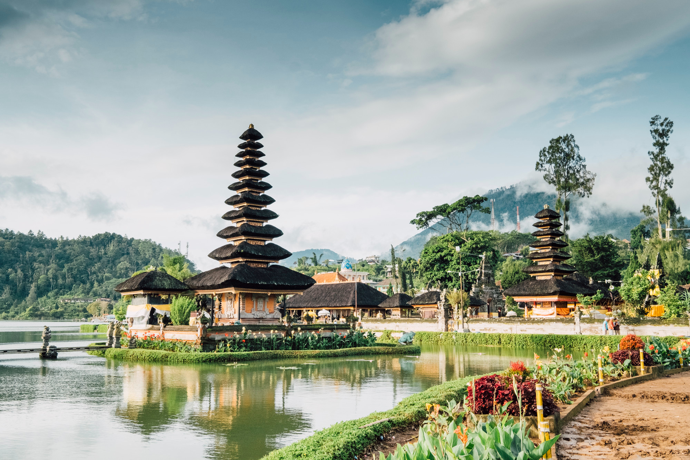
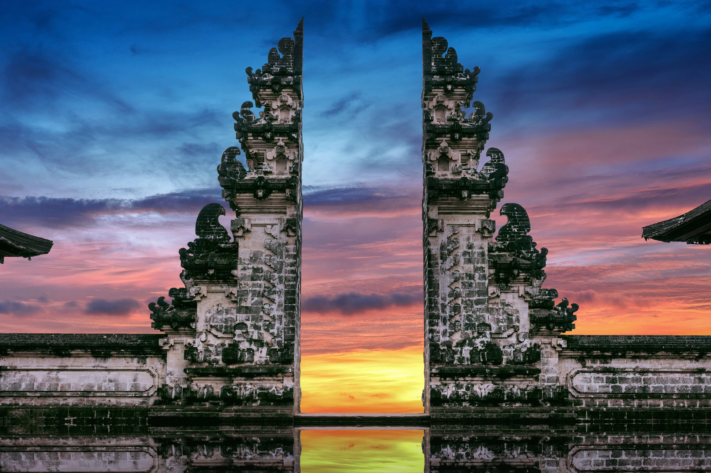

Pura Ulun Danu Beratan
Pura Ulun Danau Beratan terletak di kawasan Bedugul sekitar 55 km dari kota Denpasar, terletak di ketinggian sekitar 1240 m di atas permukaan laut.

Pura Lempuyang
Pura Lempuyang Luhur memiliki gapura setinggi empat meter yang menjadi spot foto primadona. Berlatarkan panorama Gunung Agung dengan langit biru yang magis.

Tanah Lot
Tanah Lot adalah formasi batuan di lepas pantai pulau Bali, Indonesia. Ini adalah rumah bagi kuil ziarah Hindu kuno Pura Tanah Lot, ikon wisata dan budaya yang populer untuk fotografi.